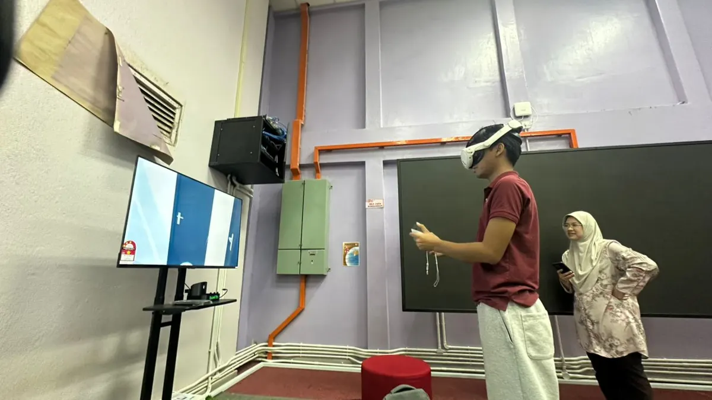
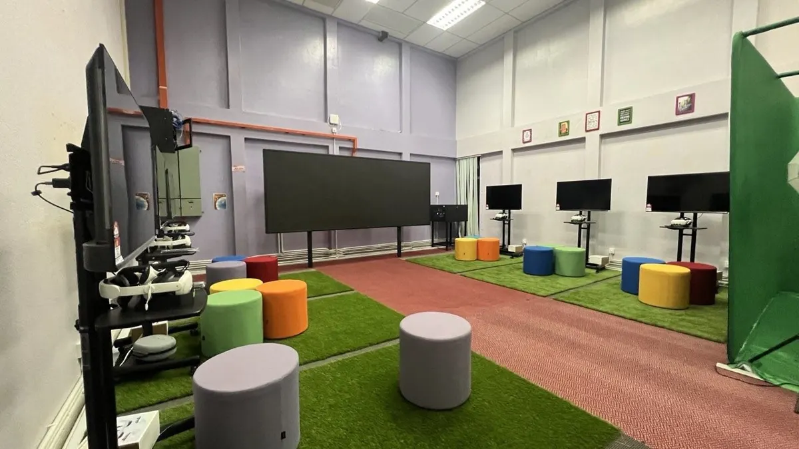
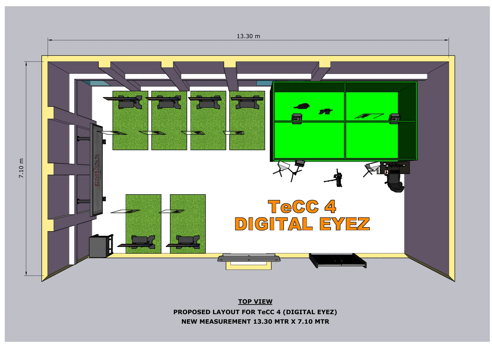
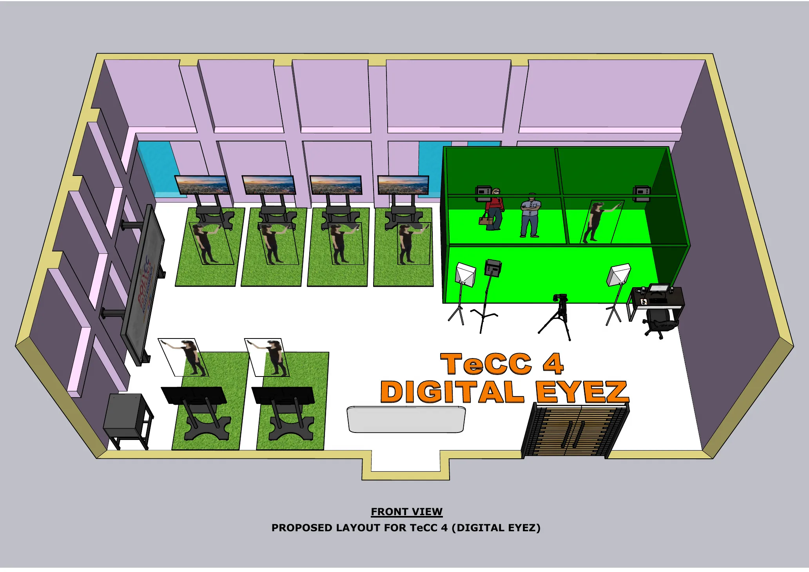

Tatacara / panduan penggunaan
Dokumen TECC 4.0 Usage & Guidelines tersedia. Perlu disahkan versi penggunaan rasmi bagi tahun 2026.
Versi dikemas kini (GP) dan manual kerja Digital Cubix turut ditemui; bandingkan dahulu.
TECC 4.0 menyediakan akses kepada sumber imersif dan kemudahan penghasilan kandungan digital melalui platform tempahan khusus.

Profil ruang, fasiliti dan tujuan.
Surat pentauliahan (SPP) dan pelan dikawal: lihat status dalam lampiran. Lihat Bukti & Lampiran ↗




Ruang imersif dengan skrin LED, green screen dan stesen kerja untuk pembelajaran dan penghasilan kandungan digital.
Beberapa pengguna belajar serentak melalui headset VR di stesen masing-masing.
Pensyarah membimbing pelajar semasa sesi VR: bukti teknologi digunakan dalam pengajaran, bukan sekadar dipamerkan.
Stesen kerja dan peralatan studio yang menyokong sesi imersif dan rakaman.
Rujukan: Garis Panduan TECC 4.0 (BIPD 2024), Bab 2.0 Ruang, Peralatan dan Susun Atur, serta dokumen Spesifikasi Peralatan TECC 4.0 dan Pelan Susun Atur Cadangan.


Papan tanda jenama TECC 4.0 perlu dipamerkan dengan saiz pilihan 10 × 150 cm (Bab 2.4). Tadbir urus oleh Jawatankuasa Empowering Digital Learning yang dipengerusikan oleh Timbalan Pengarah (Bab 3.1).
| Bil. | Peralatan | Kuantiti | Spesifikasi utama |
|---|---|---|---|
| 1 | Android Smart TV 4K HDR 43" c/w stand | 6 set | Panel 4K UHD 3840×2160, HDR10+/HDR10/HLG, Chromecast terbina dalam, Bluetooth 5.0. Dimensi tanpa pedestal 966×567×92 mm. Pedestal laras ketinggian beroda dengan brek dan dulang laptop. |
| 2 | Workstation (VR / 3D) | 1 set | Intel Core i9-13900K, 64 GB DDR5, NVIDIA GeForce RTX 3070 8 GB, SSD NVMe 512 GB, Windows 11 Home, Wi-Fi 6E. Monitor Dell 27" P2722H, papan kekunci dan tetikus Dell. Waranti ProSupport 3 tahun. |
| 3 | Peranti VR (mixed reality) | 6 set | Snapdragon XR2 Gen 2, storan 512 GB, RAM 8 GB, 2064×2208 piksel setiap mata, kadar segar 72–120 Hz, lensa pancake, passthrough warna, Wi-Fi 6E, bateri sehingga kira-kira 2.2 jam. Kabel Link 5 m disertakan. Model: Meta Quest 3 mengikut surat kursus EV-XPLORE. |
| 4 | Green Screen + sistem bunyi aktif + motion capture + lampu studio | 1 set | Kamera 24× zum optik (MOV/MP4/AVCHD), tripod. Sistem bunyi 90 W Dolby Audio. 3 lampu LED RGB (CRI >97, 3200–5600K) dan 2 lampu GVM COB (2700–7500K). Latar hijau mudah alih 5.5 m (L) × 2.5 m (T) × 3 m (D). Siling mestilah 3 m. |
| 5 | Perisian 3D VR interaktif: SimLab Composer Mechanical Edition | 1 set | Lesen pendidikan langganan 3 tahun dengan penyelenggaraan. Latihan sekurang-kurangnya 2 hari untuk 3 orang bagi setiap lesen. |
| 6 | Wireless presenter + dongle Share Button | 1 set | Keluaran sehingga 4K, dwi-jalur Wi-Fi 2.4/5 GHz (802.11 a/g/n/ac), sehingga 8 butang serentak dan 4 tetingkap paparan, jarak terima sehingga 35 m, WPA2-PSK. Diletakkan di dalam rak 9U. |
| 7 | Modul pembentangan video | 1 unit | Tablet AMOLED 11", Snapdragon 8 Gen 2, 256 GB, bateri 8,400 mAh, IP68, empat pembesar suara AKG. Pen digital dan sarung papan kekunci disertakan. |
| 8 | Meja dan kerusi komputer ergonomik | 1 set | Meja 105 × 50 × 75 cm (beban maksimum 50 kg). Kerusi ergonomik beroda 5 kaki, beban diuji 110 kg, ketinggian tempat duduk 43–53 cm. |
| 9 | Dinding kaca magnet untuk perbincangan | 1 unit | Papan kaca magnet tempered 8 kaki × 4 kaki dengan dulang penanda. Dipasang pada dinding, boleh dipasang mendatar atau menegak. |
| 10 | Panel dinding digital (LED) dan sistem kawalan | 1 set | Kabinet 3,584 × 1,408 mm, jarak piksel 2 mm, kecerahan >600 cd/m². Pemproses video 2-dalam-1 (4K/1920), HDMI matrix, suis gigabit 16 port dan rak 9U (600 × 800 mm). Spesifikasi menyebut matrix 4 masuk 4 keluar; lukisan integrasi menyebut 8 masuk 8 keluar. |
| 11 | Rumput tiruan (kawasan rehat) | 6 keping | Setiap keping 5 kaki × 8 kaki, tinggi bulu 25 mm, hijau, sesuai dalam atau luar bangunan. |
| 12 | Set meja perbincangan | 1 set | 4 pouf berdiameter 71 cm (tinggi 44 cm) dan 1 meja kopi berdiameter 90 cm (tinggi 48 cm, beban 20 kg). |
| 13 | Tempat duduk ergonomik | 1 set | 450 × 450 × 430 mm, warna campuran, kaki getah senyap yang tidak mencalar lantai. |
Pengurusan ruang, SOP dan penyelenggaraan.
Dokumen TECC 4.0 Usage & Guidelines tersedia. Perlu disahkan versi penggunaan rasmi bagi tahun 2026.
Versi dikemas kini (GP) dan manual kerja Digital Cubix turut ditemui; bandingkan dahulu.
Pengurusan TECC 4.0 dan Unit e-Pembelajaran — nama pegawai rasmi perlu disahkan.
Lampirkan prosedur pelaporan kerosakan, pemeriksaan VR/peralatan studio dan rekod tindakan.
Sistem tempahan Professional Resource Booking Platform; status tempahan bukan bukti kehadiran.
Angka dan carta utama pada satu paparan.
Jadual, rekod aktiviti dan garis masa 2026.
Platform tempahan TECC 4.0 digunakan untuk mengurus akses ke bilik dan peralatan. Statistik berikut merujuk kepada tempahan dalam senarai yang disediakan — bukan bukti pelaksanaan atau kadar penggunaan fizikal sebenar.
| Jabatan | Tempahan | Jam |
|---|
| Tarikh | Sumber / aktiviti direkod | Jam | Catatan | Bukti |
|---|
Surat dan lampiran lain: lihat halaman lampiran. Lihat Bukti & Lampiran ↗
Dapatan utama dan kesediaan bukti mengikut rubrik bintang.
Pencapaian, inovasi dan saluran penyebarluasan.
Bukti penyebarluasan aktiviti TECC 4.0 perlu dipautkan pada artikel, saluran rasmi institusi atau laporan aktiviti yang benar-benar diterbitkan.
Tindakan untuk melengkapkan laporan dan meningkatkan ruang.
Surat, dokumen dan bukti sokongan.